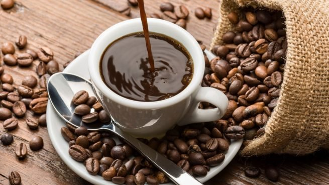
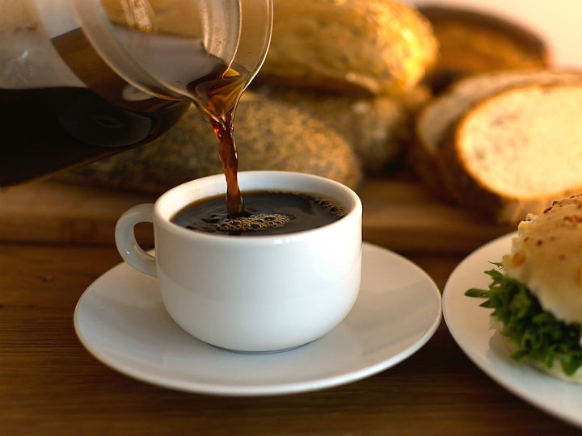

1.
Capuchino
es una bebida nacida en Italia, preparada con café expreso y leche montada con vapor para darle cremosidad. Un capuchino se compone de 125 ml de leche y 25 ml de café expreso, en ocasiones se agrega cacao en polvo o canela según el gusto del consumidor.

2.
cafe
Minatitlan, Veracruz, Coatzacoalcos
es una forma típica de preparar el café en México, que consiste en aromatizarlo con canela y piloncillo; a veces también clavo de olor, chocolate amargo, anís estrellado, pimienta de Tabasco y piel de naranja o limón.
3.
Cafe descafeinado
Xalapa, Veracruz Coatzacoalcos
El café descafeinado es simplemente café al que se le ha extraído la cafeína. Como antes mencionábamos, hay diversos métodos para realizar esta acción y algunos de ellos, son más benéficos que otros.
4.
Cafe con Leche
El café con leche es una de las bebidas más comunes que incluyen café. Consta básicamente de dos ingredientes: café y leche, con una proporción que varía de acuerdo a las costumbres locales, pero ronda la mezcla por partes iguales.